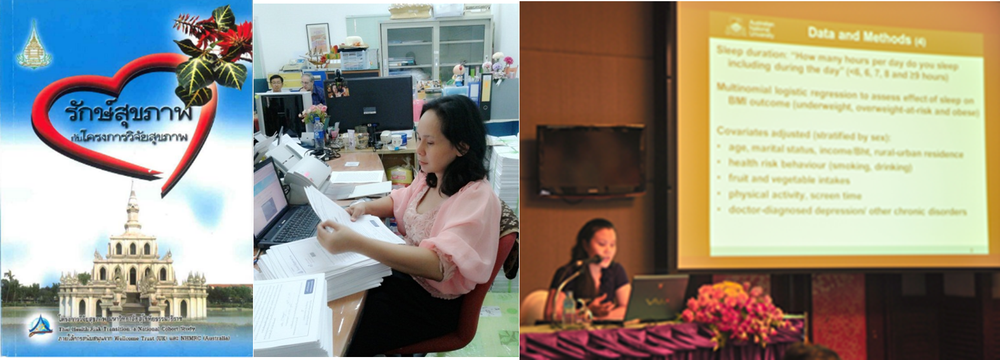

![]() Home
Publications
TCS Team
Pictures
Home
Publications
TCS Team
Pictures

Cohort profile: The Thai Cohort of 87,134 Open University students
Article LinkA large national Thai Cohort Study of the Health-Risk Transition based on Sukhothai Thammathirat Open University students
Article LinkMethods used for successful follow-up in a large scale national cohort study in Thailand
Article LinkThai SF-36 health survey: tests of data quality, scaling assumptions, reliability and validity in healthy men and women
Article LinkValidity of self-reported weight, height, and body mass index among university students in Thailand: Implications for population studies of obesity in developing countries
Article LinkGender, socioeconomic status, and self-rated health in a transitional middle-income setting: evidence from Thailand
Article LinkGender, socioeconomic status, and self-rated health in a transitional middle-income setting: evidence from Thailand
Article LinkThe associations between unhealthy behaviours, mental stress, and low socio-economic status in an international comparison of representative samples from Thailand and England
Article LinkSecular changes and predictors of adult height for 86 105 male and female members of the Thai Cohort Study born between 1940 and 1990
Article LinkRelationship of obesity to physical activity, domestic activities, and sedentary behaviours: cross-sectional findings from a national cohort of over 70,000 Thai adults
Article LinkSocioeconomic status, sex, and obesity in a large national cohort of 15-87-year-old open university students in Thailand
Article LinkShort sleep and obesity in a large national cohort of Thai adults
Article LinkRelationship between 8-year weight change, body size, and health in a large cohort of adults in Thailand
Article LinkEvolving food retail environments in Thailand and implications for the health and nutrition transition
Article LinkNutrition transition, food retailing and health equity in Thailand
Article LinkHealth, happiness and eating together: what can a large Thai cohort study tell us?
Article LinkDietary patterns associated with hypertension risk among adults in Thailand: 8-year findings from the Thai Cohort Study
Article LinkSocial Demography of Transitional Dietary Patterns in Thailand: Prospective Evidence from the Thai Cohort Study
Article LinkSugar sweetened beverages and weight gain over 4 years in a Thai national cohort--a prospective analysis
Article Link"I rarely read the label": Factors that Influence Thai Consumer Responses to Nutrition Labels
Article LinkNutrition label experience and consumption of transitional foods among a nationwide cohort of 42,750 Thai adults
Article LinkNutrition label experience, obesity, high blood pressure, and high blood lipids in a cohort of 42,750 Thai adults
Article LinkLongitudinal associations between oral health impacts and quality of life among a national cohort of Thai adults
Article LinkOral Health-Related Quality of Life among a large national cohort of 87,134 Thai adults
Article LinkFactors associated with self-reported number of teeth in a large national cohort of Thai adults
Article LinkEpidemiological associations of hearing impairment and health among a national cohort of 87 134 adults in Thailand
Article LinkAssociation between vision impairment and health among a national cohort of 87,134 Thai adults
Article LinkIncidence and risk factors for type 2 diabetes mellitus in transitional Thailand: results from the Thai cohort study
Article LinkBody mass index and type 2 diabetes in Thai adults: defining risk thresholds and population impacts
Article LinkEarly life urban exposure as a risk factor for developing obesity and impaired fasting glucose in later adulthood: results from two cohorts in Thailand
Article LinkHealth risk factors and the incidence of hypertension: 4-year prospective findings from a national cohort of 60 569 Thai Open University students
Article LinkHealth-risk factors and the prevalence of hypertension: cross-sectional findings from a national cohort of 87,143 Thai Open University students
Article LinkValidity of self-reported hypertension: findings from the Thai Cohort Study compared to physician telephone interview
Article LinkHealth-Risk Factors and the Prevalence of Chronic Kidney Disease: Cross-Sectional Findings from a National Cohort of 87,143 Thai Open University Students
Article LinkBreast cancer in the Thai Cohort Study: an exploratory case-control analysis
Article LinkAssociation between greenness and cardiovascular risk factors: Results from a large cohort study in Thailand
Article LinkTiming of urbanisation and cardiovascular risks in Thailand: evidence from 51 936 members of the thai cohort study, 2005-2009
Article LinkSmoking behavior among 84 315 open-university students in Thailand
Article LinkHeat stress, health and well-being: findings from a large national cohort of Thai adults
Article LinkAssociation between heat stress and occupational injury among Thai workers: findings of the Thai Cohort Study
Article LinkThe association between overall health, psychological distress, and occupational heat stress among a large national cohort of 40,913 Thai workers
Article LinkAssociation between occupational heat stress and kidney disease among 37,816 workers in the Thai Cohort Study (TCS)
Article LinkThe effect of injuries on health measured by short form 8 among a large cohort of Thai adults
Article LinkNon-Fatal Injury in Thailand From 2005 to 2013: Incidence Trends and Links to Alcohol Consumption Patterns in the Thai Cohort Study
Article LinkPsychological Distress following Injury in a Large Cohort of Thai Adults
Article LinkDistribution of transport injury and related risk behaviours in a large national cohort of Thai adults
Article LinkThe impact of the Thai motorcycle transition on road traffic injury: Thai Cohort Study results The impact of the Thai motorcycle transition on road traffic injury: Thai Cohort Study results
Article LinkDeterminants of workplace injury among Thai Cohort Study participants
Article LinkReview of injuries over a one year period among 87,134 adults studying at an open university in Thailand
Article LinkReporting of lifetime fractures: methodological considerations and results from the Thai Cohort Study
Article LinkBody mass index, physical activity, and fracture among young adults: longitudinal results from the Thai cohort study
Article LinkLow back pain and limitations of daily living in Asia: longitudinal findings in the Thai cohort study
Article LinkInequalities in Risks and Outcomes in a Health Transitioning Country: A Review of a Large National Cohort of Thai Adults
Article LinkMeasuring and decomposing inequity in self-reported morbidity and self-assessed health in Thailand
Article LinkUsed and foregone health services among a cohort of 87,134 adult open university students residing throughout Thailand
Article LinkPhysically and psychologically hazardous jobs and mental health in Thailand
Article LinkHappiness, Mental Health, and Socio-Demographic Associations Among a National Cohort of Thai Adults
Article LinkPsychological distress and mental health of Thai caregivers
Article LinkCaregiving and mental health among workers: Longitudinal evidence from a large cohort of adults in Thailand
Article LinkPsychosocial job characteristics, wealth, and culture: differential effects on mental health in the UK and Thailand
Article LinkPhysical and mental health among caregivers: findings from a cross-sectional study of Open University students in Thailand
Article LinkSocial capital and health in a national cohort of 82,482 Open University adults in Thailand
Article LinkSocial Capital, Trust, Economic Stress and Religion in a Cohort of 87,134 Thai Adults
Article LinkHealth, well-being, and social indicators among monks, prisoners, and other adult members of an Open University Cohort in Thailand
Article LinkSelf-reported health and subsequent mortality: an analysis of 767 deaths from a large Thai cohort study
Article LinkSmoking, smoking cessation, and 7-year mortality in a cohort of Thai adults
Article LinkHow do cohabitation and marital status affect mortality risk? Results from a cohort study in Thailand
Article LinkRisk factors for cardiovascular disease mortality among 86866 members of the Thai Cohort Study, 2005-2010
Article LinkUnhappiness and mortality: evidence from a middle-income Southeast Asian setting
Article LinkPredictors of injury mortality: findings from a large national cohort in Thailand
Article LinkRelationship between body mass index reference and all-cause mortality: evidence from a large cohort of Thai adults
Article LinkHealth risk transition and low mortality patterns among a national cohort of aspirational thai open university students
Article LinkThe Impact of Multimorbidity on All-Cause Mortality: A Longitudinal Study of 87,151 Thai Adults
Article LinkLifecourse Urbanization, Social Demography, and Health Outcomes among a National Cohort of 71,516 Adults in Thailand
Article LinkAssociations between urbanisation and components of the health-risk transition in Thailand. A descriptive study of 87,000 Thai adults
Article LinkLong-term air pollution exposure and self-reported morbidity: A longitudinal analysis from the Thai cohort study (TCS)
Article LinkThailand's Work and Health Transition
Article LinkDevelopment Policy in Thailand: From Top-down to Grass Roots
Article LinkCultural resistance to fast-food consumption? A study of youth in North Eastern Thailand
Article LinkThe association between temperature and mortality in tropical middle income Thailand from 1999 to 2008
Article LinkChange in mean height of Thai military recruits from 1972 through 2006
Article LinkFood and nutrition labelling in Thailand: a long march from subsistence producers to international traders
Article LinkHas universal health insurance reduced socioeconomic inequalities in urban and rural health service use in Thailand?
Article LinkDecomposing socioeconomic inequality for binary health outcomes: an improved estimation that does not vary by choice of reference group
Article LinkTracking and decomposing health and disease inequality in Thailand
Article LinkUse and perceptions of sexual and reproductive health services among northern Thai adolescents
Article LinkSexual identities and lifestyles among non-heterosexual urban Chiang Mai youth: implications for health
Article LinkCoital Experience Among Adolescents in Three Social-Educational Groups in Urban Chiang Mai, Thailand
Article LinkSexual perceptions and practices of young people in Northern Thailand
Article LinkIntimate relationships among adolescents in different social groups in northern Thailand
Article Link